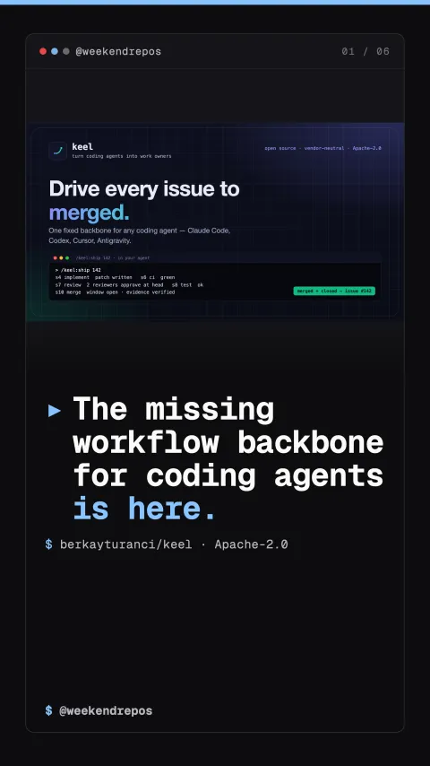

berkayturanci/keel
How Keel turns autonomous coding agents into reliable work owners

The missing workflow backbone for coding agents is here.
Autonomous coding agents wander in endless loops without workflow guardrails.
Coding agents can write code, but without rigid guardrails they hallucinate scope, skip regression tests, and create broken git merges.
berkayturanci/keel · Multi-agent workflow orchestrator
A deterministic 13-step backbone drives every issue from intake to merge.
Keel enforces a deterministic 13-step lifecycle, stopping automatically if acceptance criteria, test evidence, or review verdicts are missing.
Deterministic lifecycle: s0 intake through s12 retrospective
Orchestrate multi-agent swarms with dependency graphs and isolated worktrees.
Instead of letting agents clash over git state, Keel provisions isolated git worktrees and coordinates tasks as a directed acyclic graph.
Worktree isolation with scoped consent boundaries
One command drives any issue through implementation, review, and merge.
Run keel ship in your agent: it writes the patch in an isolated worktree, verifies CI gates, collects multi-agent review approvals, and lands the PR.
One command to merged: /keel:ship <issue>
Hidden Gem. Built for reliable autonomous coding.
A true open-source hidden gem under Apache-2.0 with 100% test coverage, Keel is the missing workflow backbone for autonomous AI engineering.
berkayturanci/keel · Hidden Gem